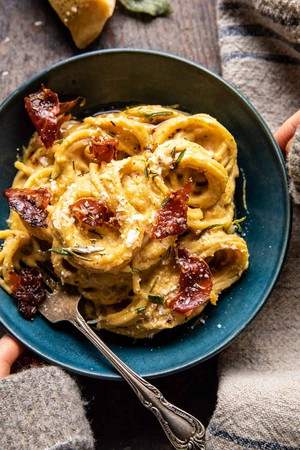

Creamy Roasted Garlic Butternut Squash Pasta

Ingredients
- 1 tablespoon extra virgin olive oil
- 2 cups cubed butternut squash
- 6-10 cloves garlic
- 2 tablespoons fresh thyme leaves
- 2 tablespoons chopped fresh rosemary
- crushed red pepper flakes
- kosher salt and black pepper
- 8 slices prosciutto
- 1/2 cup ricotta cheese
- 1 pound long or short cut pasta
- 2 tablespoons salted butter
- 1 tablespoon fresh chopped sage
- 1/2 cup shredded gouda cheese
- 1/3 cup grated parmesan cheese
Steps
- First, toss the squash and garlic with lots of fresh thyme, rosemary, chili flakes, salt, and pepper.
- Arrange the prosciutto around the squash and roast for a bit.Of course, if you don’t eat meat, you can easily omit the prosciutto or add sun-dried tomatoes
- Once the squash has finished roasting, puree it with the garlic and ricotta cheese until smooth. You can do this in a food processor or blender.
- Next, boil the pasta, but save some of the water for thinning sauce.
- Now melt the butter in a skillet with sage. Next, add the squash purée and a splash of the cooking water. Stir in some gouda cheese, add the pasta, and toss, toss, toss. Taste and season as needed. And well…you’re done.
- Serve topped with extra parmesan and that crispy prosciutto.
Back to Home